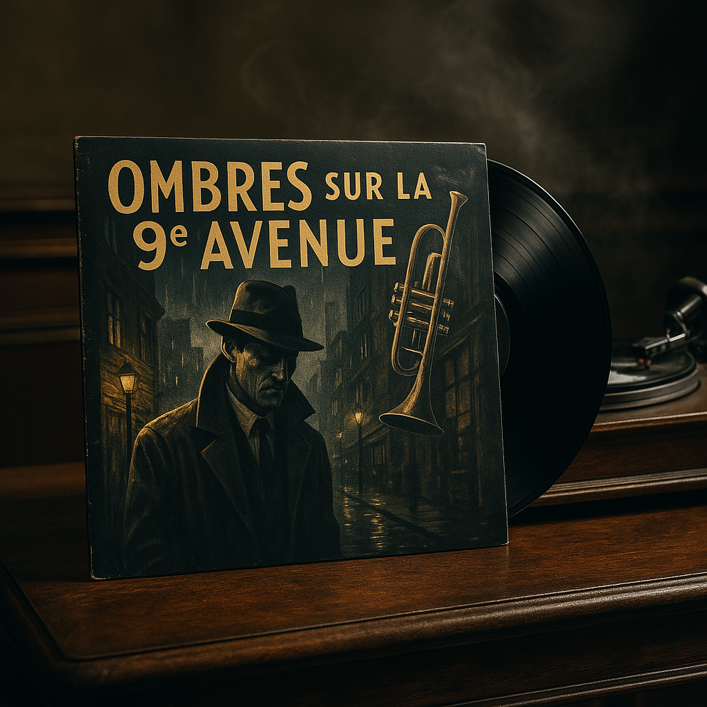
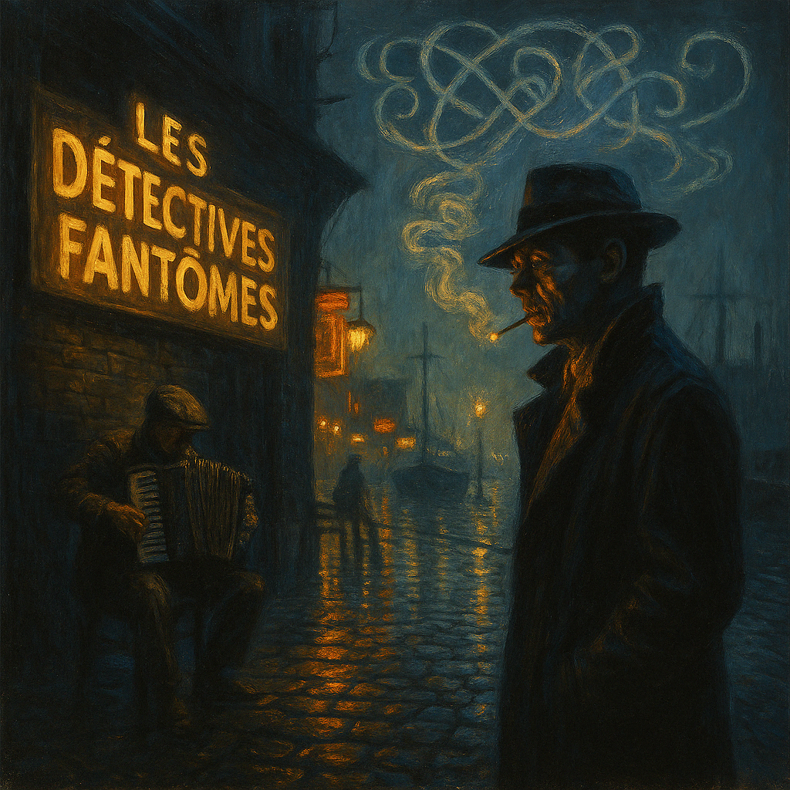
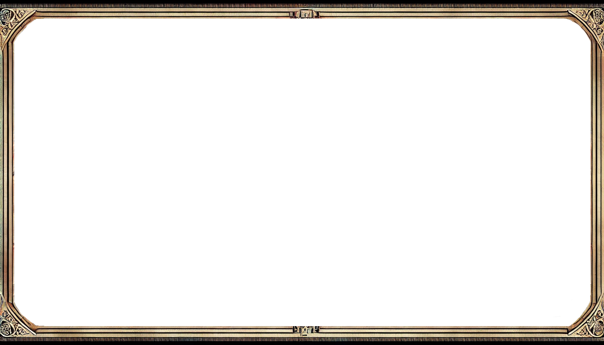

Livrables historiques connus à rattacher au HUB
Ce document liste les livrables mentionnés dans les anciens échanges, même lorsqu’ils ne sont pas physiquement inclus dans ce ZIP.
Index projet / livrable
| Projet | Livrable ou trace | Page wiki | Statut |
|---|---|---|---|
| BZH Card Game | data/tcg/BZH01.json, visuels assets/cards/      | BZH Card Game | canon / a confirmer |
| bzh-chronicles-roguelite | bzh-chronicles-roguelite-v3_1.zip | Roguelite | archive / prototype |
| BZH PW PC HUB 3D | minitel_hub_beta.zip, MINI-STAR_v1.1.zip | Minitel HUB 3D | archive / prototype |
| Runner BZH | notes de design runner / visualizer | Runner Haste | piste |
| Pirate Chronicles | animation frégate BZH POWER | Bateau BZH POWER | piste |
1. Prototypes / ZIP techniques
Roguelite BZH Chronicles
bzh-chronicles-roguelite-v3_1.zip- Contenu associé :
index.htmlgame.js
Minitel / Hub
minitel_hub_beta.zipMINI-STAR_v1.1.zipconvert_img_to_vdt_tool.zip
Éléments connus du hub
hub_ws.pytelnet_ws_bridge.pyvdt_archive/clients/panel.htmlminitel_stub.pyfirmware_esp32/
2. Documents événementiels
BZH_PW_Classement.pdfBZH_PW_Stats.pdfBZH_PW_Profils_masques.pdf
3. Gravure / motifs
BZH_cyber_gravure_set_56x30mm.zip- Motifs nommés :
- BZH_DATA_NODE
- PW_SIGNAL_GRID
- STERENNA_MEMORY
- CHRONICLE_ARCHIVE
- TRISKEL_NETWORK
- PROTOCOL_LAYER
- SIGNAL_MATRIX
- CORE_INTERFACE
4. Attestations / certificats
attestation_bzhpw_docteur_leo_giosa.svgattestation_bzhpw_docteur_leo_giosa.pdfattestation_bzhpw_docteur_leo_giosa.html
5. Limite actuelle
Ces fichiers sont référencés dans le HUB V2 mais ne sont pas tous inclus en binaire, faute de récupération directe disponible ici. Le dépôt est prêt à les recevoir dans :
archives/zips/archives/pdfs/archives/svg/archives/html/archives/documents/
6. Sources brutes réintégrées
Le lot d'import 2026-07-06 ajoute des fichiers sources conservés hors des pages wiki générées :
archives/html/bzhpw-lore/— fiches HTML bilingues Sniky et MutenRock.archives/documents/bzhpw-lore/tcg-story-source.docx— source brute du récit TCG.archives/documents/bzhpw-lore/neokarceris/— documents texte source.archives/pdfs/bzhpw-lore/neokarceris/— PDF source.
Ces fichiers restent des matériaux de référence. Leur contenu peut être consolidé plus tard dans les dossiers Markdown du hub.
7. Métadonnées d'import conservées
Le dossier imports/ doit rester un sas visible : rien n'y est masqué par Git pendant l'inventaire.
Les métadonnées système arrivées dans un lot brut sont déplacées vers archives/import-metadata/ après analyse, afin de conserver la trace complète de l'import sans les mélanger aux assets finaux.
8. Lot Desktop BZH copié et analysé
Le dossier local C:\Users\pierr\Desktop\BZH a été copié sans modification de la source vers imports/2026-07-06-desktop-bzh/.
Rapport dédié :
archives/import-reports/2026-07-06-desktop-bzh.md
Synthèse :
- 1 657 fichiers copiés ;
- 231 fichiers déjà présents dans le repo ;
- 1 426 fichiers nouveaux ;
- vidéos référencées uniquement par chemin et taille dans
archives/import-reports/2026-07-06-desktop-bzh-videos.csv; - tri final différé pour les gros fichiers, notamment
BZH_RESS\Montage\BZH ANTHEM 2.mp4qui dépasse 100 Mo.
9. Lot LoL Team Stats mis de cote
Le sous-lot LOL_TEAM_STATS du Desktop BZH contient nos statistiques de jeu LoL. Il est conserve comme snapshot brut interne, sans lien direct depuis le wiki ni promotion dans les pages publiques du hub.
Emplacement de conservation :
archives/web/lol-team-stats/raw/


imports/2026-07-06-desktop-bzh/LOL_TEAM_STATS/
10. Sous-lots audio Sniky / Dernier souffle
Deux dossiers audio du lot Desktop BZH ont ete classes comme pistes MP3 consultables :
media/audio/tracks/sniky-the-frager-mix/— 5 variantesmmk sniky 2.media/audio/tracks/dernier-souffle/— 17 pistes et variantes Dernier souffle / Echo Vide / Fantome de Chair.
Ces fichiers sont exposes par la galerie media generee depuis media/audio/.
11. Sous-lots visuels courts Desktop BZH
Les petits dossiers visuels du lot Desktop BZH ont ete classes sans toucher aux videos :
assets/logos/aligax/ — logo typographique Aligax.
— logo typographique Aligax.media/visual/references/hermine-logos/


 — references Hermine / BZH Power.
— references Hermine / BZH Power.media/visual/references/leme/


 — references LEME.
— references LEME.media/visual/covers/rtt/


 — covers RTT / Pontivy.
— covers RTT / Pontivy.media/visual/covers/bzh-chronicles-album-wip/


 — visuels album WIP.
— visuels album WIP.media/visual/covers/bzh-jazzy/

 — visuels BZH Jazzy.
— visuels BZH Jazzy.archives/import-duplicates/2026-07-06-desktop-bzh/


.png)
.png)
.png) — copies exactes conservees hors galerie.
— copies exactes conservees hors galerie.
12. Sous-lot BZH Chronicles Desktop BZH
Le sous-lot BZH_CHRONICLES a ete classe comme references et assets historiques :
assets/cards/legacy/old-card/.png)
.png)
.png)
.png)
.png)
.png) — 25 visuels de cartes legacy.
— 25 visuels de cartes legacy.media/visual/references/bzh-chronicles/ — reference visuelle BZH Chronicles.
— reference visuelle BZH Chronicles.media/visual/references/bzh-chronicles-montage/ — montage photo BZH Power.
— montage photo BZH Power.archives/sources/webtoon/MUTEN TOM.pdn— source Paint.NET conservee.archives/import-reports/2026-07-06-desktop-bzh-bzh-chronicles-duplicates.csv— index des 116 doublons exacts deja suivis.
13. Sous-lot BZH_RESS visuels courts
Une premiere passe BZH_RESS a classe les familles visuelles courtes hors videos :
media/visual/social/emotes/bzh-ress/


 — emotes et avatars.
— emotes et avatars.media/visual/social/stickers/bzh-ress/


 — stickers.
— stickers.media/visual/covers/bzh-ress-posters/


 — posters.
— posters.media/visual/wallpapers/bzh-ress/


 — wallpapers.
— wallpapers.media/visual/merch/tapestries/bzh-ress/


 — tentures.
— tentures.media/visual/merch/plush/ et
et media/visual/merch/apparel/ — references merch.
— references merch.media/visual/references/soiree-trio/


 — references de scene.
— references de scene.archives/html/bzhpw-lore/Sniky_BZH_Chronicles.html— fiche HTML Sniky complementaire.archives/import-reports/2026-07-06-desktop-bzh-bzh-ress-visuals-moves.csv— mapping source/destination.
14. Racine BZH_RESS
Les fichiers non video poses directement dans BZH_RESS/ ont ete classes :
media/visual/references/steam-escape-game/
 — photos de reference.
— photos de reference.media/visual/references/bzh-ress/ — reference personnage/loups.
— reference personnage/loups.assets/site/frames/bzhress_contour_frame_v001.png
— frame/contour.media/visual/covers/bzh-ress-posters/bzhress_hall-of-playtime_v001.png — poster Hall of Playtime.archives/documents/bzhpw-lore/— documents sources.archives/import-reports/2026-07-06-desktop-bzh-bzh-ress-root-moves.csv— mapping source/destination.
15. BZH_RESS Montage images fixes
Les images fixes du dossier Montage/ ont ete classees sans analyser les videos :
media/visual/references/bzh-dancers/


 — references chanteurs/danseurs et reworks.
— references chanteurs/danseurs et reworks.media/visual/references/bzh-trio-footage/


 — references trio/anime opening.
— references trio/anime opening.media/visual/references/bzh-ress-montage/
 — references racine du sous-lot Montage.
— references racine du sous-lot Montage.archives/import-reports/2026-07-06-desktop-bzh-bzh-ress-montage-moves.csv— mapping source/destination.
16. bzhpwimage petits lots
Une premiere passe bzhpwimage a classe les petits lots non video :
media/visual/covers/bzh-pw-album-cover/


 — covers et teasers album.
— covers et teasers album.media/visual/references/bzh-pw-rd-art/split/


 — recherches de style MutenRock.
— recherches de style MutenRock.media/visual/references/coloring-pages/
 — coloriages Aligax et MutenRock.
— coloriages Aligax et MutenRock.archives/import-reports/2026-07-06-desktop-bzh-bzhpwimage-small-moves.csv— mapping source/destination.
17. bzhpwimage logos BZH Chronicles
Le bloc bzh_chronicle_logo/ a ete classe comme assets logo :
assets/logos/bzh-chronicles/title/


 — variantes titre.
— variantes titre.assets/logos/bzh-chronicles/dominion/


 — variantes Dominion.
— variantes Dominion.assets/logos/bzh-chronicles/wip/

 — variantes WIP.
— variantes WIP.archives/sources/logos/bzh-chronicles/— source Paint.NET conservee.archives/import-reports/2026-07-06-desktop-bzh-bzhpwimage-logo-moves.csv— mapping source/destination.
18. bzhpwimage immmaaageg
Le bloc immmaaageg/ a ete classe comme references visuelles :
media/visual/references/immmaaageg/


 — references cyberpunk, Wuxia, typography et personnages.
— references cyberpunk, Wuxia, typography et personnages.archives/sources/bzhpwimage/immmaaageg_source_v001.pdn— source Paint.NET conservee.archives/import-reports/2026-07-06-desktop-bzh-bzhpwimage-immmaaageg-moves.csv— mapping source/destination.
19. bzhpwimage artwork
Le bloc bzh_pw_artwork/ a ete classe hors videos :
media/visual/references/bzh-pw-art-set/


 — art set.
— art set.media/visual/references/bzh-pw-lol-chronicles/


 — references LoL Chronicles.
— references LoL Chronicles.media/visual/covers/bzh-pw-song-cover/


 — covers de morceaux.
— covers de morceaux.media/visual/merch/bzh-pw-artwork/


 — merch.
— merch.media/visual/wallpapers/bzh-pw-aligax/


 ,
, media/visual/wallpapers/bzh-pw-city/


 ,
, media/visual/wallpapers/bzh-pw-mutenrock/


 — wallpapers.
— wallpapers.media/visual/webtoon/bzh-pw-webtoon/


 — references webtoon.
— references webtoon.archives/sources/bzhpwimage/bzh_pw_artwork_source_v001.pdn— source Paint.NET conservee.archives/import-reports/2026-07-06-desktop-bzh-bzhpwimage-artwork-moves.csv— mapping source/destination.
20. Traitement final du sas Desktop BZH
Les 520 fichiers qui restaient dans imports/2026-07-06-desktop-bzh/ ont ete traites :
- 19 videos promues dans
media/video/references/desktop-bzh/, avec des dossiers de destination derives des noms de dossiers source ; - 116 doublons exacts
BZH_CHRONICLESretires du sas apres verification du CSV de doublons ; - 25 doublons exacts non video
BZH_RESSretires du sas apres verification des CSV de doublons ; - 360 fichiers
LOL_TEAM_STATSretires du sas apres verification bit a bit contre l'archive brute interne.
Point d'entree hub :
docs/archives/import-desktop-bzh.md
Mapping videos :
archives/import-reports/2026-07-06-desktop-bzh-video-promotions.csv